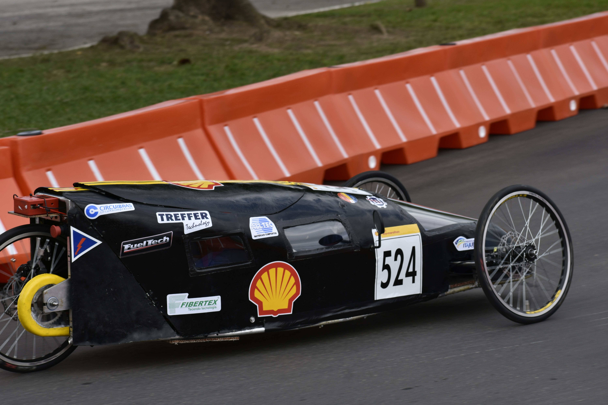
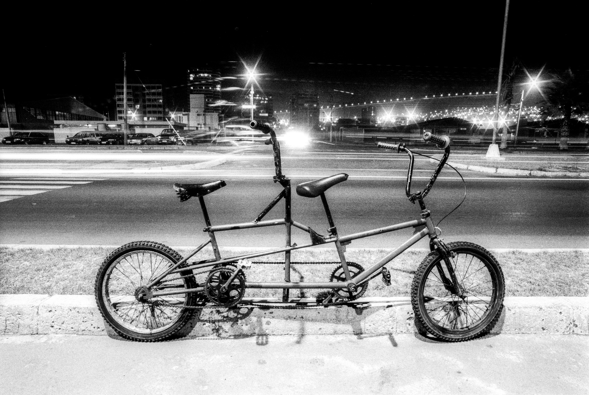
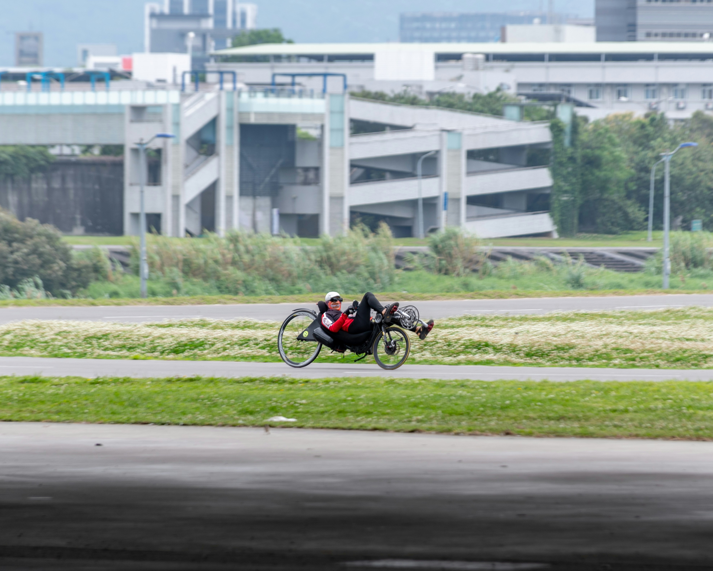

Spezi
was ist ein spezi diese frage haben sich wahrscheinlich schon viele gestellt, also ist hier die antwort:
Ein spezi ist ein Fahrad was nicht umbedinkt dem enspricht an was wir denken wenn man von Fahrädern spricht; spezis sind besondere Fahräder mit einzigartigen fähigkeiten und aussehen sie sind selten. aber wenn sie da sind sorgen sie für aufsehen. Sie können alles sein,z.B. Ein Gefährt das aussieht wie ein auto aber in wirklichkeit ein Fahrad ist!


